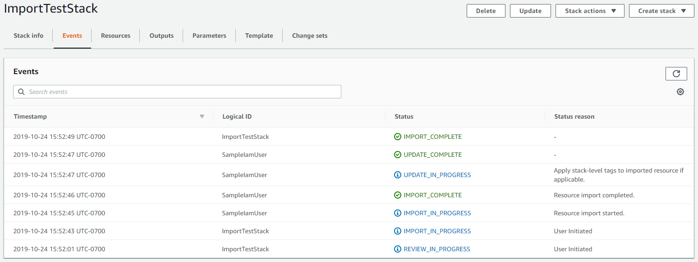

Mover recursos entre pilhas
Com o recurso resource import, é possível mover recursos entre pilhas ou refatorar pilhas. Primeiro, você precisa adicionar uma política de exclusão Retain ao recurso que você deseja mover para garantir que o recurso seja preservado ao removê-lo da pilha de origem e importá-lo na pilha de destino.
Importante
Nem todos os recursos são compatíveis com as operações de importação. Consulte Recursos compatíveis com as operações de importação antes de remover um recurso da pilha. Se você remover um recurso que não é compatível com operações de importação da pilha, não será possível importar o recurso para outra pilha ou trazê-lo de volta para a pilha de origem.
Refatorar uma pilha usando o AWS Management Console
-
No modelo de origem, especifique uma DeletionPolicy
Retainpara o recurso que deseja mover.No modelo de origem de exemplo a seguir,
Gamesé o destino desta refatoração.exemplo JSON
{ "AWSTemplateFormatVersion": "2010-09-09", "Description": "Import test", "Resources": { "ServiceTable":{ "Type":"AWS::DynamoDB::Table", "Properties":{ "TableName":"Service", "AttributeDefinitions":[ { "AttributeName":"key", "AttributeType":"S" } ], "KeySchema":[ { "AttributeName":"key", "KeyType":"HASH" } ], "ProvisionedThroughput":{ "ReadCapacityUnits":5, "WriteCapacityUnits":1 } } }, "GamesTable": { "Type": "AWS::DynamoDB::Table", "DeletionPolicy": "Retain", "Properties": { "TableName": "Games", "AttributeDefinitions": [ { "AttributeName": "key", "AttributeType": "S" } ], "KeySchema": [ { "AttributeName": "key", "KeyType": "HASH" } ], "ProvisionedThroughput": { "ReadCapacityUnits": 5, "WriteCapacityUnits": 1 } } } } } -
Abra o console do AWS CloudFormation para executar uma atualização de pilha para aplicar a política de exclusão.
-
Na página Stacks (Pilhas) com a pilha selecionada, escolha Update (Atualizar).
-
Em Prepare template (Preparar modelo), escolha Replace current template (Substituir modelo atual).
-
Em Specify template (Especificar modelo), forneça o modelo de origem atualizado com o atributo
DeletionPolicynaGamesTablee escolha Next (Próximo).-
Escolha Amazon S3 URL (URL do Amazon S3) e especifique o URL para o modelo de origem atualizado na caixa de texto.
-
Escolha Upload a template file (Fazer upload de um arquivo de modelo) e procure o arquivo de modelo de origem atualizado.
-
-
Na página Specify stack details (Especificar detalhes da pilha) nenhuma alteração é necessária. Escolha Next (Próximo).
-
Na página Configure stack options (Configurar opções de pilha) nenhuma alteração é necessária. Escolha Next (Próximo).
-
Na página Review (Revisar)
stack_namerevise suas alterações. Se o seu modelo contém recursos do IAM, selecione I acknowledge that this template may create IAM resources (Eu reconheço que este modelo pode criar recursos do IAM) para especificar que você deseja usar recursos do IAM no modelo. Para obter mais informações sobre o uso de recursos do IAM em modelos, consulte Controlar o acesso com o AWS Identity and Access Management. Depois, atualize sua pilha de origem criando um conjunto de alterações ou atualize sua pilha de origem diretamente.
-
-
Remova o recurso, os parâmetros relacionados e as saídas do modelo de origem e adicione-os ao modelo de destino.
O modelo de origem agora se parece com o seguinte.
exemplo JSON
{ "AWSTemplateFormatVersion": "2010-09-09", "Description": "Import test", "Resources": { "ServiceTable":{ "Type":"AWS::DynamoDB::Table", "Properties":{ "TableName":"Service", "AttributeDefinitions":[ { "AttributeName":"key", "AttributeType":"S" } ], "KeySchema":[ { "AttributeName":"key", "KeyType":"HASH" } ], "ProvisionedThroughput":{ "ReadCapacityUnits":5, "WriteCapacityUnits":1 } } } } }O modelo de destino de exemplo a seguir tem atualmente o recurso
PlayersTablee agora também contémGamesTable.exemplo JSON
{ "AWSTemplateFormatVersion": "2010-09-09", "Description": "Import test", "Resources": { "PlayersTable": { "Type": "AWS::DynamoDB::Table", "Properties": { "TableName": "Players", "AttributeDefinitions": [ { "AttributeName": "key", "AttributeType": "S" } ], "KeySchema": [ { "AttributeName": "key", "KeyType": "HASH" } ], "ProvisionedThroughput": { "ReadCapacityUnits": 5, "WriteCapacityUnits": 1 } } }, "GamesTable": { "Type": "AWS::DynamoDB::Table", "DeletionPolicy": "Retain", "Properties": { "TableName": "Games", "AttributeDefinitions": [ { "AttributeName": "key", "AttributeType": "S" } ], "KeySchema": [ { "AttributeName": "key", "KeyType": "HASH" } ], "ProvisionedThroughput": { "ReadCapacityUnits": 5, "WriteCapacityUnits": 1 } } } } } -
Repita as etapas 2 e 3 para atualizar a pilha de origem novamente, desta vez para excluir o recurso de destino da pilha.
-
Execute uma operação de importação para adicionar
GamesTableà pilha de destino.-
Na página Stacks (Pilhas), com a pilha pai selecionada, escolha Stack actions (Ações da pilha) e Import resources into stack (Importar recursos para a pilha).

-
Leia a página Import overview (Visão geral da importação) para obter uma lista de itens que você deve fornecer durante esta operação. Em seguida, escolha Next (Próximo).
-
Na página Specify template (Especificar modelo), siga um destes procedimentos e escolha Next (Próximo).
-
Escolha Amazon S3 URL (URL do Amazon S3) e especifique um URL na caixa de texto.
-
Escolha Upload a template file (Fazer upload de um arquivo de modelo) e procure um arquivo a ser carregado.
-
-
Na página Identify resources (Identificar recursos) identifique o recurso que você está movendo (neste exemplo,
GamesTable).-
Em Identifier property (Propriedade do identificador), escolha o tipo de identificador do recurso. Por exemplo, um recurso
AWS::DynamoDB::Tablepode ser identificado usando a propriedadeTableName. -
Em Identifier value (Valor do identificador), digite o valor real da propriedade. Por exemplo,
GamesTables
-
Escolha Next (Próximo).
-
-
Na página Specify stack details (Especificar detalhes da pilha), modifique os parâmetros e escolha Next (Próximo). Isso cria automaticamente um conjunto de alterações.
Importante
A operação de importação falhará se você modificar os parâmetros existentes que iniciam uma operação de criação, atualização ou exclusão.
-
Na página Review
stack_name(Revisar nome-pilha), confirme se o recurso correto está sendo importado e escolha Import resources (Importar recursos). Isso inicia automaticamente o conjunto de alterações criadas na última etapa. As tags no nível da pilha são aplicadas aos recursos importados no momento. -
O painel Events (Eventos) da página Stack details (Detalhes da pilha) de sua pilha pai será exibido.
nota
Não é necessário executar a detecção de desvio na pilha pai após essa operação de importação, pois o recurso
AWS::CloudFormation::Stackjá é gerenciado pelo AWS CloudFormation.
-
Refatorar uma pilha usando o AWS CLI
-
No modelo de origem, especifique uma DeletionPolicy
Retainpara o recurso que deseja mover.No modelo de origem de exemplo a seguir,
GamesTableé o destino desta refatoração.exemplo JSON
{ "AWSTemplateFormatVersion": "2010-09-09", "Description": "Import test", "Resources": { "ServiceTable":{ "Type":"AWS::DynamoDB::Table", "Properties":{ "TableName":"Service", "AttributeDefinitions":[ { "AttributeName":"key", "AttributeType":"S" } ], "KeySchema":[ { "AttributeName":"key", "KeyType":"HASH" } ], "ProvisionedThroughput":{ "ReadCapacityUnits":5, "WriteCapacityUnits":1 } } }, "GamesTable": { "Type": "AWS::DynamoDB::Table", "DeletionPolicy": "Retain", "Properties": { "TableName": "Games", "AttributeDefinitions": [ { "AttributeName": "key", "AttributeType": "S" } ], "KeySchema": [ { "AttributeName": "key", "KeyType": "HASH" } ], "ProvisionedThroughput": { "ReadCapacityUnits": 5, "WriteCapacityUnits": 1 } } } } } -
Atualize a pilha de origem para aplicar a política de exclusão ao recurso.
aws cloudformation update-stack --stack-name "source-stack-name" -
Remova o recurso, os parâmetros relacionados e as saídas do modelo de origem e adicione-os ao modelo de destino.
O modelo de origem agora se parece com o seguinte.
exemplo JSON
{ "AWSTemplateFormatVersion": "2010-09-09", "Description": "Import test", "Resources": { "ServiceTable":{ "Type":"AWS::DynamoDB::Table", "Properties":{ "TableName":"Service", "AttributeDefinitions":[ { "AttributeName":"key", "AttributeType":"S" } ], "KeySchema":[ { "AttributeName":"key", "KeyType":"HASH" } ], "ProvisionedThroughput":{ "ReadCapacityUnits":5, "WriteCapacityUnits":1 } } } } }O modelo de destino de exemplo a seguir tem atualmente o recurso
PlayersTablee agora também contémGamesTable.exemplo JSON
{ "AWSTemplateFormatVersion": "2010-09-09", "Description": "Import test", "Resources": { "PlayersTable": { "Type": "AWS::DynamoDB::Table", "Properties": { "TableName": "Players", "AttributeDefinitions": [ { "AttributeName": "key", "AttributeType": "S" } ], "KeySchema": [ { "AttributeName": "key", "KeyType": "HASH" } ], "ProvisionedThroughput": { "ReadCapacityUnits": 5, "WriteCapacityUnits": 1 } } }, "GamesTable": { "Type": "AWS::DynamoDB::Table", "DeletionPolicy": "Retain", "Properties": { "TableName": "Games", "AttributeDefinitions": [ { "AttributeName": "key", "AttributeType": "S" } ], "KeySchema": [ { "AttributeName": "key", "KeyType": "HASH" } ], "ProvisionedThroughput": { "ReadCapacityUnits": 5, "WriteCapacityUnits": 1 } } } } } -
Atualize a pilha de origem para excluir o recurso
GamesTablee os parâmetros relacionados, além das saídas da pilha.aws cloudformation update-stack --stack-name "source-stack-name" -
Crie um conjunto de alterações do tipo
IMPORTcom os seguintes parâmetros. O--resources-to-importnão é compatível com o YAML incorporado.>aws cloudformation create-change-set --stack-nameTargetStack--change-set-nameImportChangeSet--change-set-typeIMPORT--resources-to-import "[{\"ResourceType\":\"AWS::DynamoDB::Table\",\"LogicalResourceId\":\"GamesTable\",\"ResourceIdentifier\":{\"TableName\":\"Games\"}}]" --template-bodyfile://templateToImport.jsonA AWS CLI também oferece suporte a arquivos de texto como entrada para o parâmetro
resources-to-import, como mostrado no exemplo anterior.--resources-to-importfile://resourcesToImport.txtNesta demonstração,
file://resourcesToImport.txtcontém o seguinte.[ { "ResourceType":"AWS::DynamoDB::Table", "LogicalResourceId":"GamesTable", "ResourceIdentifier": { "TableName":"Games" } } ] -
Revise o conjunto de alterações para certificar-se de que o recurso correto está sendo importado para a pilha de destino.
aws cloudformation describe-change-set --change-set-nameImportChangeSet -
Inicie o conjunto de alterações para importar o recurso para a pilha de destino. As tags no nível da pilha são aplicadas aos recursos importados no momento. Após a conclusão com êxito da operação
(IMPORT_COMPLETE), o recurso será importado com êxito.aws cloudformation execute-change-set --change-set-nameImportChangeSet--stack-name (TargetStackName)nota
Não é necessário executar a detecção de desvio na pilha de destino após a operação de importação porque o recurso já está gerenciado pelo AWS CloudFormation.